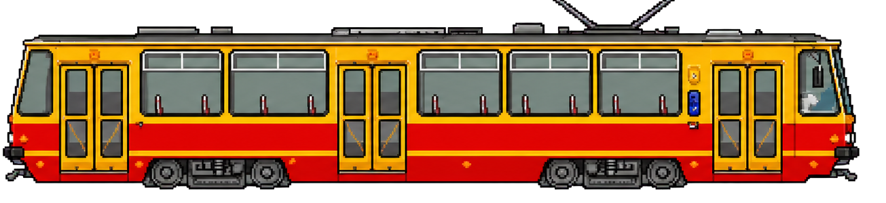

Cm. Zarzew
Piotrkowska Centrum
Teofilow
Podglad trasy
Kluczowe punkty linii 8
- Cm. Zarzew
- Widzew Stadion
- Piotrkowska Centrum
- Dw. Lodz Kaliska
- Wlokniarzy
- Teofilow
Lodz Cala Naprzod
Lokalny projekt z energia miasta
Gra powstala jako spolecznosciowa pocztowka z trasy linii 8: z lodzkimi przystankami, klimatem ulic i szybka arcade'owa presja ostatniego kursu.